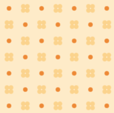

Projects
Task-List API

Date:2022
Tools Utilized: Python, SQL, SQLAlchemy, Flask
Skills Gained: Building and Deploying a Web API, Creating Custom Endpoints, Creating and Using Test Fixtures, Communication with an External Web API, Creating Model Classes, Establishing Relationships
This project required the creation of multiple databases and environments for the development and testing of a web API.
The Task-List API allows the user to create goals and task items, assign tasks to goals, delete goals and tasks, and interface with the Slack Web API
to provide the user with task notifications.
Swapmeet
Date:2022
Tools Utilized: Python
Skills Gained: OOP programming, Creating Classes and Instance Methods, Test Driven Development, Instantiating Classes, Implementing Inheritance, Overriding Methods From superclassea and Object
A program that keeps track of various Vendor inventories, and allows for the swap of items based off of various conditions, such as age and condition.
Ada Say
Date:2022
Tools Utilized: Python, Git
Skills Gained: Using Git, Creating and Installing Dependencis in Virtual Environments, Activating and Deactivating Virtual Environments, Forking and Cloning Repositories, Making and Pushing Commits to Origin
Good clean fun using the cowsay module.
Python Fizzbuzz
Date:2022
Tools Utilized: Python
Skills Gained: smthn
A simple numbers game that requires the input of a list of integers. Depending on the value of each integer in the list, the algorithm will
print the integer as usual, fizz, buzz, or Fizzbuzz!
Wordle
Date:2022
Tools Utilized: Python
Skills Gained: Conditionals, Loops, Using a Python Library and Module
A remake of the popular NYT game, Wordle